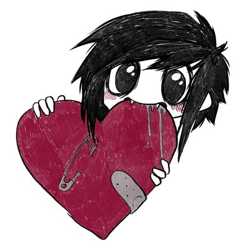

🔍 Нажми на фото для увеличения

Добро пожаловать в интерактивный абсурд Пангод. Музыка и звуковые эффекты включатся автоматически при старте! Нажимай на картинки, чтобы приблизить их, проверяй сумочку и отыщи все 4 основные и 2 секретные концовки.